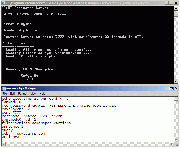

Windows 服务器
From SA-MP Wiki
  A Working Server!
A Working Server!
Contents |
[edit]
需求
- 因特网连接 (一个 100 个玩家在线的服务器耗费大约 4Mbps 的上传带宽)
- 一个对外开放的 UDP 端口 (默认为 7777)
- 最好有一个静态的IP地址，但并非必要
[edit]
建立服务器
[edit]
获取服务器文件
架设你的 samp server 的第一步是从 SA-MP 下载页面 下载 Windows Server 文件。你可以在Windows Server标题下面找到当前版本的Windows Server文件 - 点击其中的一个下载链接开始下载，确保你把文件放到了你很容易记住的地方。
[edit]
配置你的服务器
下载完之后, 解压(使用能解压.rar文件的软件)文件 (不需要把它们放在特定的目录里，因为服务端运行不需要你安装GTA:SA和SA-MP)。 现在去编辑你的 server.cfg 文件.
在你的服务端文件的根目录下找到 server.cfg 然后在记事本或者其他文本编辑器里打开它。 这个文件应该以可读的英文展现在你面前。 这个文件是用来配置你的服务器的, 在这里你可以指定 lanmode 是 打开 还是 关闭, 最大玩家数, 服务器端口, 服务器名称, 游戏模式, 附加脚本*, 网站地址 和你的 rcon 密码.
[edit]
启动服务器
配置完服务器之后，你就可以运行服务器了. 要运行它，你只需点击 samp-server.exe ，然后你的服务器就会启动。
[edit]
局域网
如果你想把你的服务器连接到本地局域网, 请看这里。
[edit]
保持服务器在线
因SA-MP服务器的反崩溃容错能力有限，所以服务器进程仍会有很大几率因你的Pawn脚本异常而发生内存访问违例。这将会导致服务器意外关闭，你得手动去重启它。
这个批处理程序会在SA-MP服务器崩溃时重启samp-server.exe。 你只需要把以下内容存到一个后缀名为.bat的文本文件里:
:Start samp-server.exe goto start
把这个文件放到samp-server.exe所在的文件夹下并启动。 在服务器控制台里输入exit来测试它是否有效。

{kind=link}